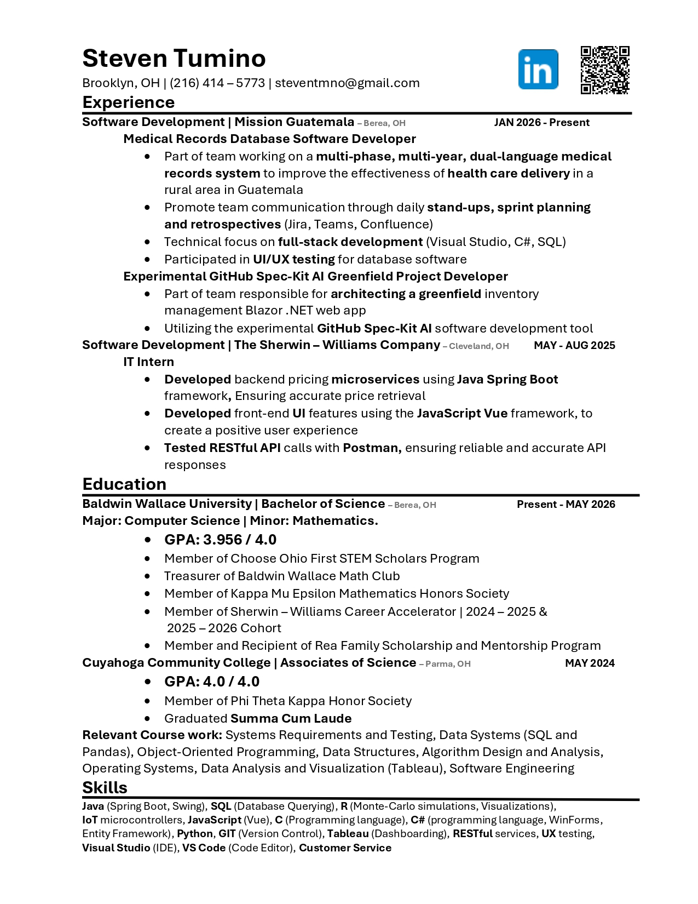
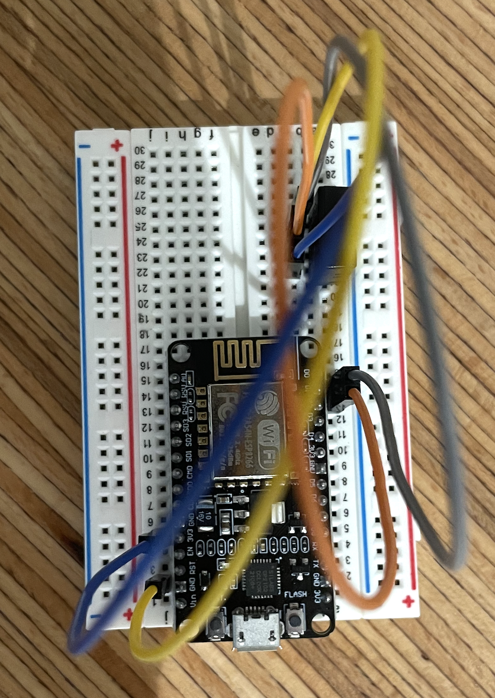
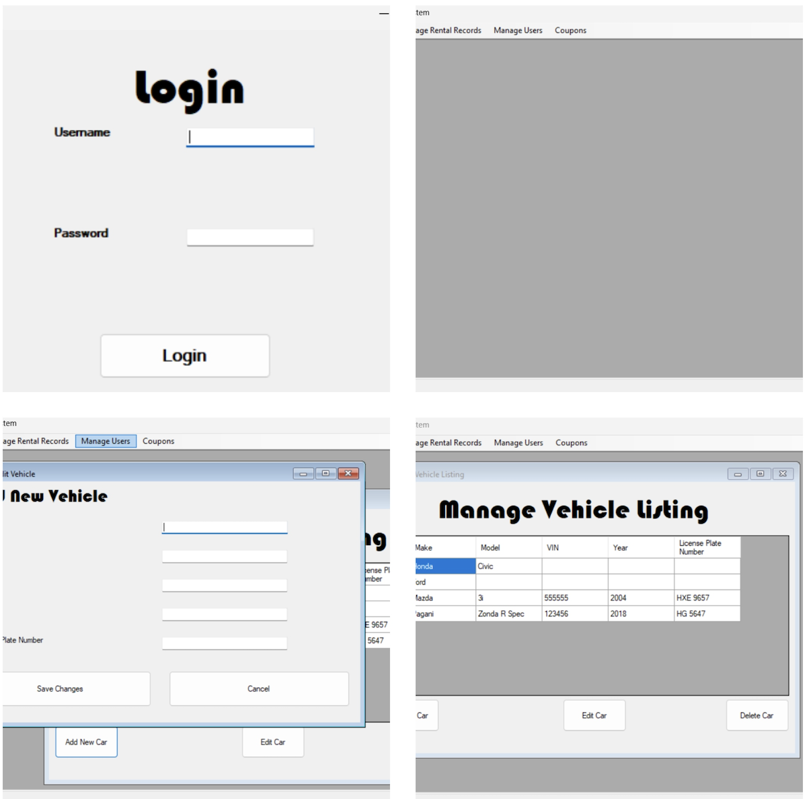
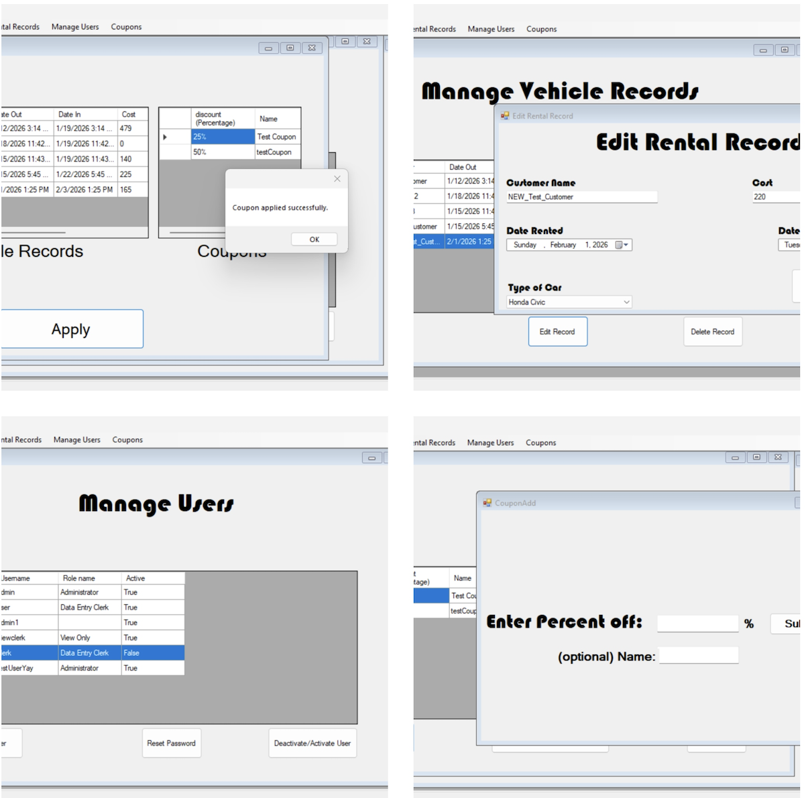
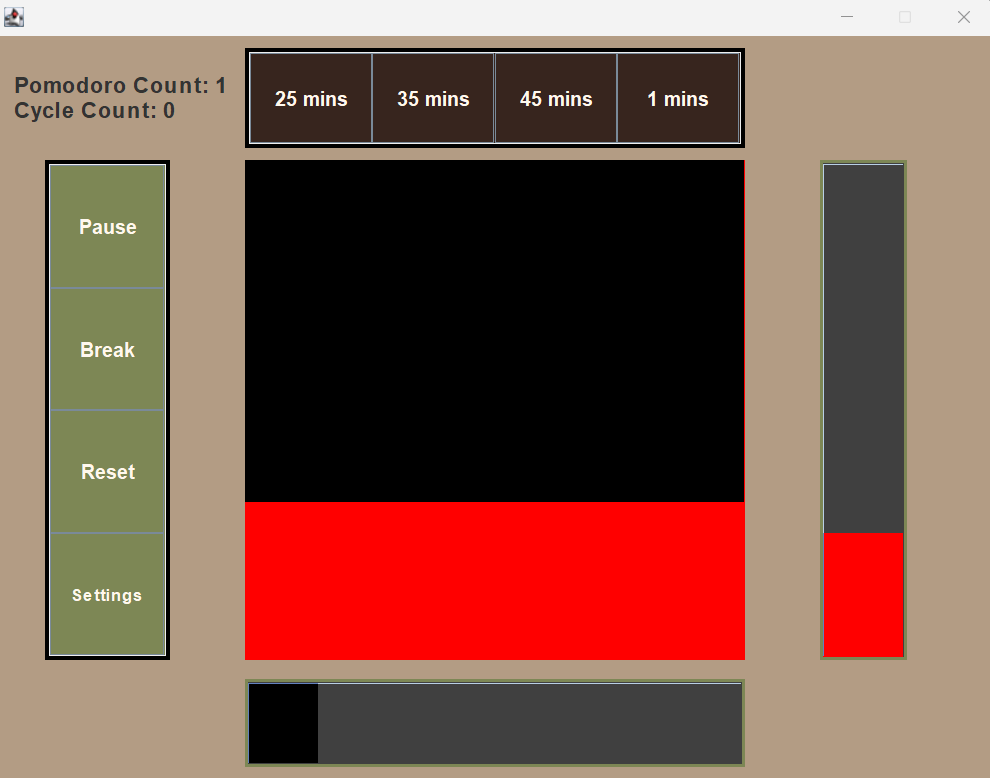
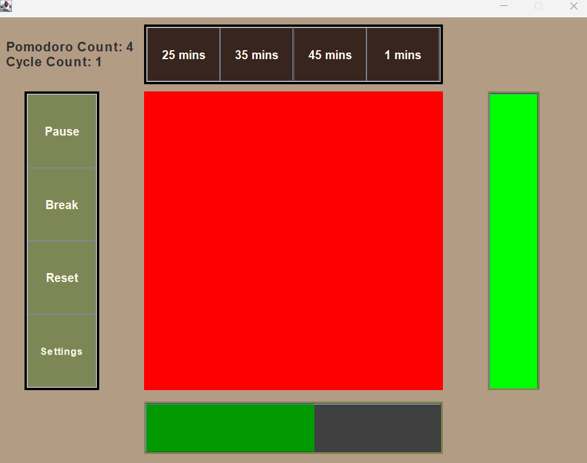
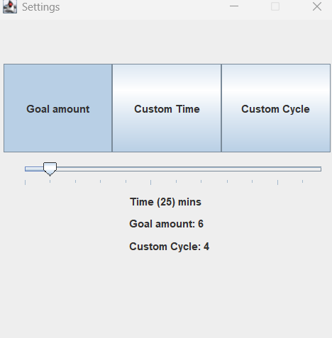

Senior CS Student | Software Engineer
Hi, I'm Steven Tumino. I am a senior CS Student at Baldwin Wallace Univertiy in Berea Ohio dedicated to building robust applications while maintaining a high standard of academics
Resume

About Me
I build robust, full-stack software. As a Computer Science senior at Baldwin Wallace University (graduating May 2026) my experience spans from corporate enterprise tools to global non-profit platforms.
My technical knowledge is built with hands-on work. During my time at Sherwin-Williams, I developed product pricing software using Java Spring Boot and Vue.js. My current work is heavily rooted in C# backend development. I serve as a developer for Mission Guatemala's dual-language medical records database software, utilizing C# and Entity Framework to build the complex data models that support healthcare professionals in remote regions. Additionally, I am collaborating with team to help architect a new application for the organization by using experimental AI tools. Whether I'm mapping relational data or participating in Agile stand-ups, I love turning complex requirements into scalable software.
Projects
Current Projects
Spec-Driven Development (Mission Guatemala)
Utilizing GitHub's experimental Spec-Kit AI tool for a greenfield inventory management system application. The application will provide a centralized auditable system to both track and identify purchase trends for the organization.
To learn more about GitHub SpecKit and Spec-Driven development please visit this repository https://github.com/github/spec-kit
IoT campus temperture tracking

I am helping build a system to track temperature trends across campus buildings by utilizing microcontrollers and sensors that communicate via REST APIs to display real-time environmental data on a web dashboard.
More Projects
Car Rental App
A WinForms desktop car rental application with functional user-friendly UI. The Database was managed in SQL Server Management Studio. Database interaction was handled using the Entity Framework and LINQ to enable CRUD operations.
Tech Stack
- C#
- .NET Framework / Winforms
- LINQ and ADO.NET
- SQL Server Management Studio
Based on Trevoir Williams C# course called "C# Console and Windows Forms Development with Entity Framework"


Pomodoro Study Tool
A pomodoro timer application built with Java and the Swing framework to to help aid study and keep track of time
Tech Stack
- C#
- Java
- Swing
- Maven
Features
- Preset Timers: 25, 35 and 45 minute timers
- Customer Timer: Custom timer length (adjustable via the settings menu)
- Pause and Resume: Enables pausing and resume pomodoro cycles
- Break: Break timer
- Settings Window: Change Progress Tracking Goals


